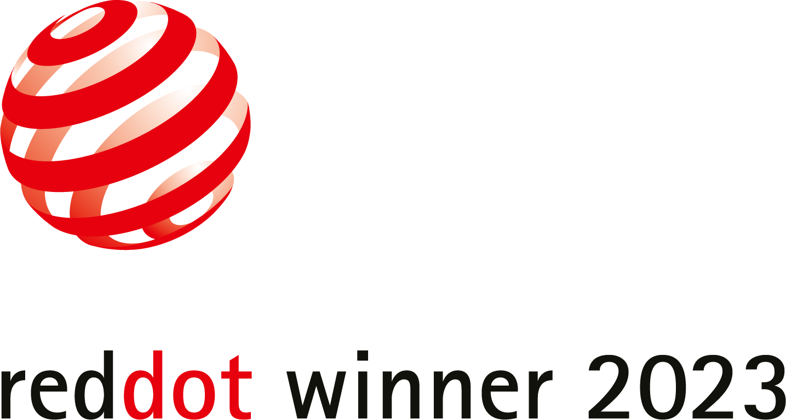
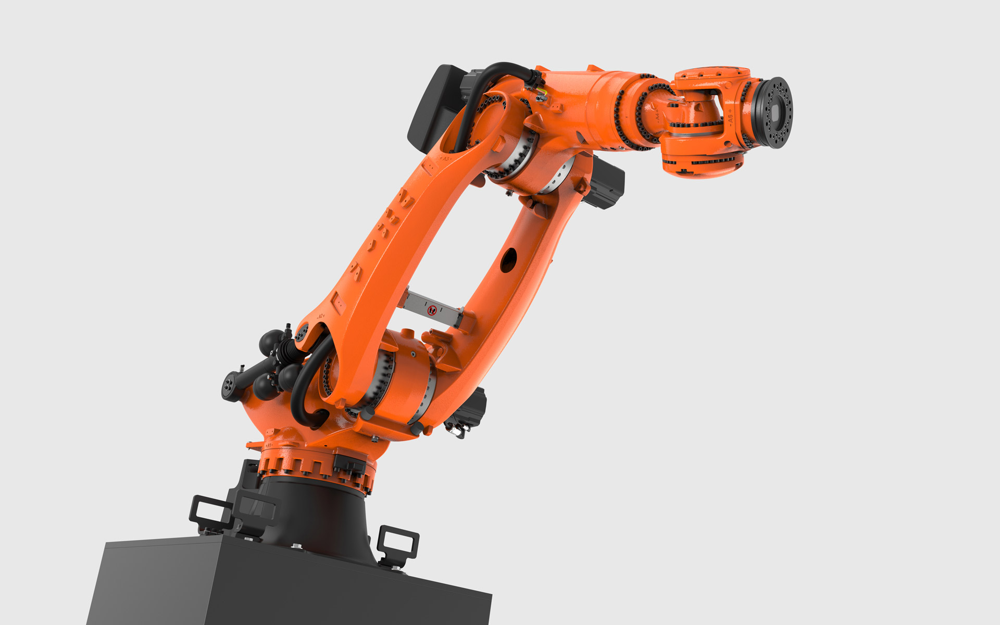
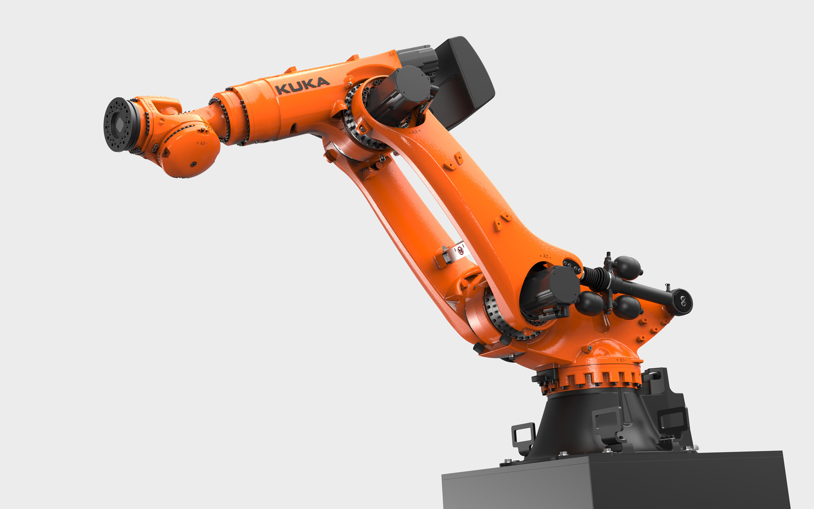
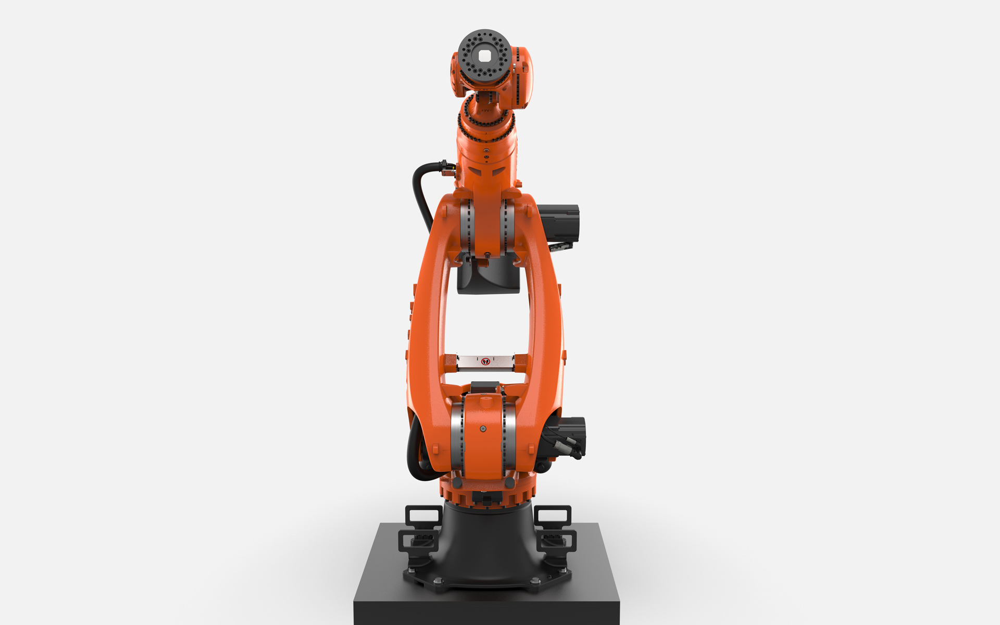
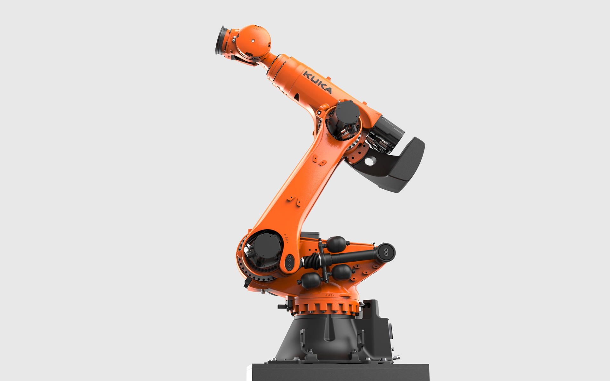

KUKA KR FORTEC-2 ultra
Heavy Duty Robot
KUKA KR FORTEC-2 ultra
Schwerlastroboter
The KUKA KR FORTEC-2 ultra is the world's first series-produced robot with a double linking arm to move and position very high loads of up to 800 kg extremely quickly and with absolute precision.
This unique selling point is its special strength, which lies in the absolute efficiency when handling and
processing heavy and large components in the smallest and therefore cost-saving space. Even under extreme
loads, the machine guarantees reliable, precise long-term operation with consistent production quality in
all
conceivable industrial applications. With an extremely low mass of only 2400kg for its payload class, the KR
FORTEC-2 ultra achieves an outstanding weight/load ratio.
Organically designed, powerful components give the robot a lively appearance and visualize the performance
and mobility of the machine. Mechanically, they ensure high flexural strength and torsional rigidity,
which
is important for precise, reliable work.
Flowing shape transitions withstand the enormous power flow and the extreme physical dynamic properties.
The
robot has no superfluous cover parts. Each visible component also has its technical function.
Der KUKA KR FORTEC-2 ultra ist der weltweit erste Serienroboter mit einer doppelten Schwinge, um extrem schnell und absolut präzise sehr hohe Lasten bis zu 800kg zu bewegen und zu positionieren.
Dieses Alleinstellungsmerkmal ist seine besondere Stärke, die in einer absoluten Effizienz beim Handling und
Bearbeiten schwerer und großer Bauteile auf kleinstem und damit kostensparendem Raum liegt. Selbst unter
extremen Belastungen garantiert die Maschine einen zuverlässigen, präzisen Langzeitbetrieb bei
gleichbleibender Produktionsqualität in allen denkbaren Industrieanwendungen. Mit seiner extrem geringen
Masse erreicht der KR FORTEC-2 ultra ein bislang unerreichtes Gewichts-/Traglastverhältnis.
Organisch gestaltete, kraftvolle Bauelemente verleihen dem Roboter ein lebendiges Erscheinungsbild und
visualisieren die Leistungsfähigkeit und Beweglichkeit der Maschine.
Mechanisch sorgen sie für hohe Biegefestigkeit und Torsionssteifigkeit, wichtig für präzises,
zuverlässiges
Arbeiten. Fließende Formübergänge halten dem enormen Kraftfluss und den extremen physikalischen
Dynamikeigenschaften stand. Der Roboter besitzt keine überflüssigen Verkleidungsteile, jede Komponente hat
ihre technische Funktion.




Images © Selic Industriedesign